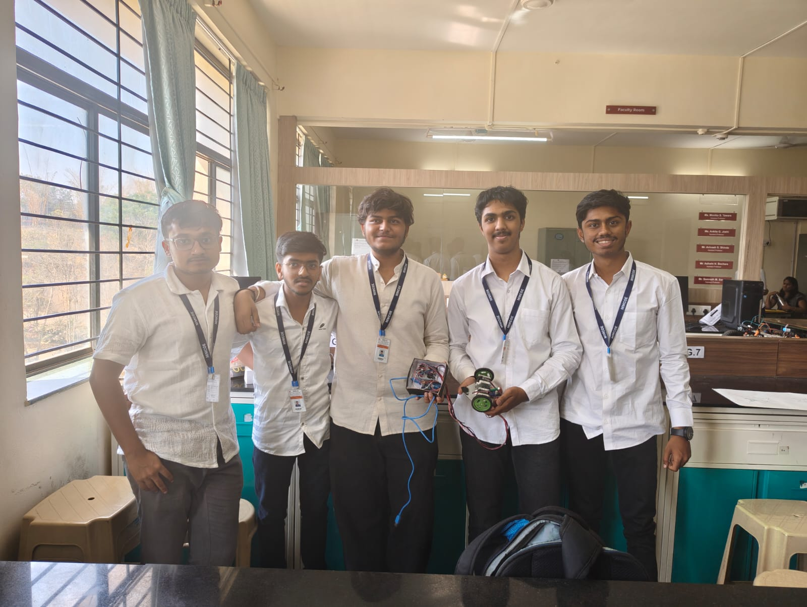

Personal experience
Use the notes section below to document what you personally handled, what failed during preparation or demonstration, how the project was explained, and what you learned from presenting a physical system.
INVOLVEMENT · UDAAN 2K26 · TECHNICAL EXHIBITION
Technical exhibition and project-competition involvement documented through the physical project presentation, team participation and competition certificate. This page is intentionally centred on the engineering experience behind the event rather than a generic event description.

SKILLS
Use the notes section below to document what you personally handled, what failed during preparation or demonstration, how the project was explained, and what you learned from presenting a physical system.
The group photograph records the team context around the project and can be used to document individual responsibilities separately from the final prototype.
The exhibition setting required the project to be understood through a working physical demonstration rather than only through source code or documentation.
The original certificate and exhibition photographs are retained as primary supporting material for this involvement.
| EVENT | UDAAN 2K26 Project Competition |
|---|---|
| DATE | March 2025 |
| FORMAT | Technical exhibition / project presentation |
| DOCUMENTATION | Certificate, exhibition photograph and group photograph |
| PAGE PURPOSE | Personal experience, responsibilities, decisions and lessons from the event |

The original certificate is retained in the repository as supporting evidence for this involvement.
| CERTIFICATE | Open original UDAAN 2K26 certificate ↗ |
|---|---|
| EXHIBITION PHOTO | Open original exhibition image ↗ |
| GROUP PHOTO | Open original group image ↗ |
EDIT THIS BOX DIRECTLY IN THE REPO. Write your own account of the UDAAN experience here: what you built or demonstrated, your role, preparation, problems during the event, technical discussions, feedback, and what you would do differently.